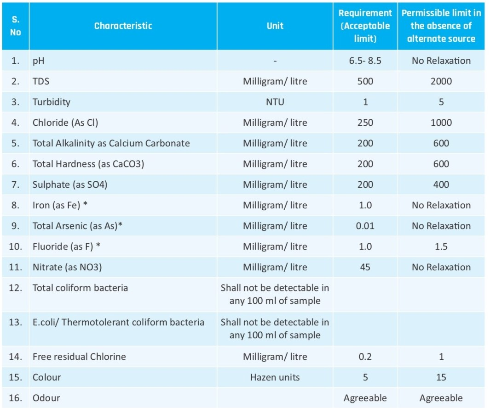

Regular assessment of drinking water quality is essential to ensure the safety and well-being of individuals and communities. This process involves collecting water samples from various sources, such as household taps, wells, and public water sources, and analyzing them for basic parameters.
The measurements of various parameters are categorized into three distinct groups:
- Above Permissible Limit: Indicates measurements of a parameter that exceeds the permissible limit, rendering the water unsafe for drinking.
- Above Acceptable Limit: Measurements fall within the range of the acceptable limit but surpass the permissible limit. While generally safe for immediate consumption, continued use may pose potential issues.
- Below Acceptable Limit: Demonstrates measurements of a parameter below the acceptable limit, ensuring water safety for drinking with minimal health risks.
This classification system helps in determining the safety and suitability of drinking water, guiding individuals and authorities in taking appropriate actions to maintain or improve water quality.